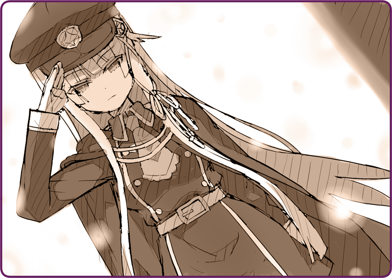

Nagi: “Tôi về rồi đây. Xin lỗi em, hôm nay tôi về hơi muộn.”
Mặt Trời khuất núi được một lúc, chủ nhân về nhà cùng câu chào vô ưu.
Tay cầm bàn chải đánh giày, tôi đứng ngay trước mặt người ấy.
Đôi ủng bước trên chỗ tuyết chưa tan hết đã bám toàn bùn đất.
Tôi tức tốc giúi cho người ấy một đôi giày đi trong nhà, lại còn ép buộc ngài phải cởi đôi ủng ra ngay tắp lự.
Nagi: “Cũng phải, từ lần sau tôi sẽ cẩn thậ… ồ?”
Người ấy khịt khịt mũi.
Nagi: “Cái mùi này… là vỏ bánh sao?”
Nagi: “Biếu á?”
Tôi giải thích vắn tắt về vị khách ban trưa tới nhà.
Nagi: “Ừm ừm.”
Chủ nhân gật gù liên tục, trông có vẻ rất hài lòng.
Nagi: “Hôm nay em vui quá nhỉ.”
Nagi: “Otome-chan đã đến chưa?”
Nagi: “Chắc bị hoãn chuyến tàu rồi không chừng. Vậy thì mình cứ thong dong chờ thôi nhỉ.”
Tôi nhận lấy chiếc áo khoác. Vóc người chủ nhân mảnh mai đến mức mong manh. Thật khó nghĩ ngài lại là một kẻ háu ăn, nhưng chính miệng ngài đã nói thể trạng của mình là như thế.
Nagi: “Rồi, vậy ta cùng ăn món bánh cá hồi đó thôi chứ hả?”
Nagi: “Đừng nói vậy chứ.”
Đương lúc chúng tôi trao đổi như thế, đột nhiên có tiếng gõ cửa.
Tôi chạy ra mở cửa.
Bên ngoài đang đổ tuyết, cửa vừa mở đã khiến tinh thể tuyết lùa vào trong nhà.
“Tôi xin phép.”
Đứng đó là một thiếu nữ Hình nhân da trắng tựa bông tuyết.
Cô khoác trên người bộ quân phục và chiếc áo măng tô lam sẫm tiệm cận màu đen, cùng với đó là một mái tóc màu tuyết trắng. Một sợi dây tua bằng vàng tự hào treo trên ngực cô.

Yukiha: “Tôi là Hình nhân Chiến đấu Yukiha, đến từ Liên đội Bộ binh số 423.”
Cô gái Hình nhân ấy làm động tác kính lễ đơn giản với những cử chỉ tao nhã không chê vào đâu được.
Tôi cũng khép chân lại, định bụng kính lễ đáp lại cô ấy theo thói quen, nhưng rồi chẳng có từ nào thoát ra khỏi miệng cả.
Tôi chẳng còn cách nào khác ngoài chào lại một cách ngớ ngẩn như vậy.
Yukiha: “Cho hỏi, đây có phải nơi tạm trú của Đại úy Kỹ thuật Tohma Nagi không?”
Yukiha: “Xem ra đúng là dinh thự này rồi, thưa Thiếu tá Okunomiya.”
Cô gái quay gót ra sau và nói với màn đêm.
Otome: “Ừ, cảm ơn em.”
Nhìn kỹ hơn, có một chiếc xe quân dụng đang đỗ đằng đó. Một người đội mũ nhà binh che khuất cả mắt bước xuống xe.
Đó là một quân nhân có vẻ ngoài rất quý phái— cao ráo, mảnh dẻ cùng tác phong trang nghiêm. Mái tóc màu nâu sáng của cô được buộc lại gọn gàng, để lộ ra bờ gáy cao tuyệt đẹp. Cô chỉ trang điểm nhẹ, vậy mà màu son môi đỏ hơi tía kia đã trông thật quyến rũ.
Otome: “Tôi là Okunomiya Otome.”
Ngay cả hồi còn tại ngũ, tôi cũng chẳng biết nên ứng đối kiểu gì với tình huống như thế này.
Đầu tiên phải dẫn người này vào nhà đã…
Nagi: “Otome-chan, cuối cùng cũng tới rồi đó ha!”
Từ trong nhà, chủ nhân bước tới cùng nụ cười toe toét.
Nagi: “Chắc ngoài ấy lạnh lắm phải không, thôi vào trong nhanh nào. Ấy, tay lạnh thế này…”
Sau khi khoác vai ra chiều thân mật, chủ nhân dẫn người ấy vào trong nhà.
Nagi: “À, ủng thì cởi ngoài này nhé, không lại mua việc cho Karasuba mất…”
Yukiha: “Đại úy Tohma, thái độ như vậy với cấp trên là…”
Otome: “Không cần để ý đâu, con người này lúc nào chẳng thế.”
Nagi: “Em ấy vừa trổ tài làm món bánh cá hồi đấy, ta cùng ăn chứ? Cả Yukiha nữa, em thấy thế nào?”
Yukiha: “...... Hình nhân không cần thiết phải ăn uống ạ.”
Nagi: “Nào nào, đừng nói vậy chứ.”
Lần này thì ngài lại kéo tay Yukiha và cưỡng ép đưa cô ấy vào nhà.
＊ ＊ ＊
Otome: “Bộ tư lệnh có vẻ không định củng cố Mặt trận Tây Nam. Nếu thật sự là vậy thì toàn lực lượng có thể chuyển hướng hành quân. Miễn là còn giữ cứ điểm Kinuka thì phe ta vẫn cố thủ được. Ngặt nỗi, họ không muốn ra chỉ thị do sợ phải chịu trách nhiệm. Cứ dùng dằng mãi thế này thì bộ binh ta đóng quân ở đó phải làm sao đây…?”
Ngồi quanh chiếc bàn tròn, Thiếu tá Okunomiya đang trôi chảy thuật lại quân tình và việc nước.
Tôi đứng chờ bên cạnh, quan sát hai người họ bàn luận với nhau. Trong đó có những chuyện đáng ra không nên nghe, nhưng Yukiha đang nhắm mắt lại, vờ như bỏ ngoài tai, nên tôi cũng bắt chước theo.
Nagi: “Ra thế, đại khái tôi cũng hiểu tình hình rồi.”
Chủ nhân mỉm cười, gật đầu lia lịa.
Nagi: “Tạm bỏ qua chuyện đó, cậu nhìn Karasuba phát nào. Tôi đã đại tu em ấy đến mức này đấy. Chỉ còn tí nữa là sửa xong hẳn luôn!”
Otome: “...... Như mọi khi, cậu chỉ biết tầm xàm bá láp về Hình nhân thôi nhỉ.”
Cơ hồ quen với việc này, ngài ấy cười khổ. Hai người này có vẻ đã biết nhau một thời gian tương đối dài.
Otome: “Đã mất công nghỉ phép rồi, vậy mà cậu lại… tới cái vùng hẻo lánh này để chơi với Hình nhân như vậy hả?”
Nagi: “Giãn gân giãn cốt lắm đấy.”
Otome: “Lâu lâu về nước một lần xem nào.”
Nagi: “Chả cần đâu. Đằng nào ông cũng không còn nữa… A, để tôi đi mở chai rượu nhé…”
Nagi: “Những việc như này là bổn phận của chủ nhà. Hai em cũng làm tí nhiên liệu đi.”
Yukiha: “......”
Yukiha thậm chí còn không mở miệng, chỉ liếc mắt vào chai nhiên liệu đặt trên bàn.
Nagi: “Lát nhớ uống nhiều vào nhé…… Nào, Otome-chan.”
Sau khi rót rượu đầy hai ly, chủ nhân đổi chủ đề.
Nagi: “Đến lúc vào chuyện chính rồi đấy nhỉ.”
Otome: “Hửm?”
Nagi: “Lại chơi trò giả ngố rồi. Cậu chắc không phải lặn lội đường xa tới đây… chỉ vì muốn gặp tôi đâu nhỉ?”
Otome: “Không mong gì hơn ở cậu, vẫn cứ tự mãn quá đáng như vậy.”
Sau khi uống cạn ly rượu, cô ấy hướng ánh nhìn sắc bén về phía chủ nhân.
Otome: “Chiến đấu cơ của Lobelia đang thường xuyên thám sát vùng biển này.”
Nagi: “Nếu là trinh sát đường không thì là chuyện thường ngày rồi còn gì.”
Otome: “Quá thường xuyên. Tôi thấy nghi nên đã điều tra và biết được, rằng vài tháng trước, một chiếc phi cơ tư hữu đã mất liên lạc ở gần vùng biển này.”
Nagi: “Phi cơ tư hữu?”
Otome: “Phải, và sau khi điều tra thêm về chủ sở hữu thì…”
Nagi: “Có vẻ là một gián điệp, nhỉ?”
Otome: “Đoán chuẩn đấy.”
Nagi: “Hừm… nói cách khác, cậu đang đi tìm tên đó chứ gì?”
Otome: “Tôi đoán rằng hắn đang nắm giữ rất nhiều cơ mật hệ trọng. Dù chỉ là có thể thôi, nhưng cũng đáng để bỏ công lắm chứ… Ngày mai quân chủ lực sẽ…”
Trước những lời đó của Thiếu tá Okunomiya, tôi vô thức ưỡn thẳng lưng dậy.

 “Xin ngài đừng vào nhà với đôi giày bẩn đó nữa đi ạ.”
“Xin ngài đừng vào nhà với đôi giày bẩn đó nữa đi ạ.”